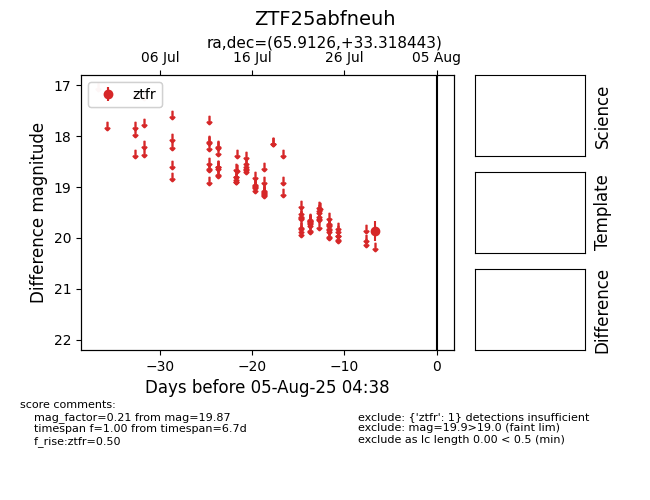

Target ZTF25abfneuh at 2025-08-05 04:38, see:
FINK: fink-portal.org/ZTF25abfneuh
Lasair: lasair-ztf.lsst.ac.uk/objects/ZTF25abfneuh
ALeRCE: alerce.online/object/ZTF25abfneuh
alt names
ZTF25abfneuh (ztf,fink)
coordinates:
equatorial (ra, dec) = (65.9126,+33.31844)
galactic (l, b) = (165.8628,-11.33540)
photometry
last ztfr=19.87
1 ztfr detections
